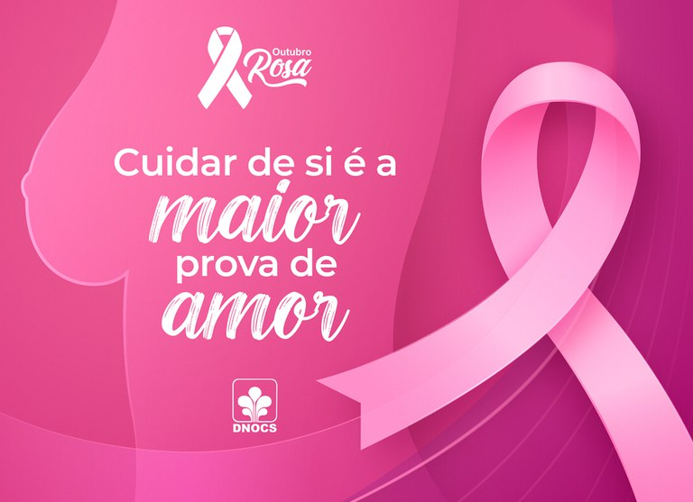

O Outubro Rosa é um movimento internacional de conscientização para o controle do câncer de mama.
Ele é celebrado anualmente no mês de Outubro e tem como principais objetivos:
O nome remete ao laço rosa, que é um símbolo internacional na luta contra o câncer de mama. É por isso que, durante o mês, diversos monumentos, edifícios públicos e privados são iluminados de rosa, servindo como um lembrete visual da importância da causa.
diagnóstico precoce, por meio de exames e do autoconhecimento do próprio corpo, é o maior aliado para um tratamento eficaz e aumento das chances de cura. Mais recentemente, a campanha também tem sido usada para abordar o câncer do colo do útero.
Em resumo, o Outubro Rosa é um período de mobilização social para reforçar as mensagens de saúde e cuidado integral da mulher.
